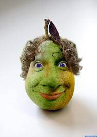
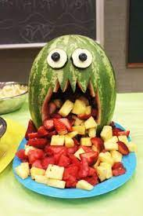
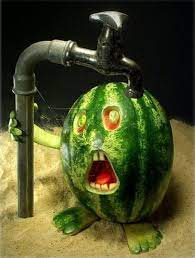
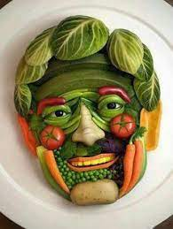

When Walter Melon was a younger melon, it was often said that he would never be mistaken for a handsome melon.
Unfortunately for Walter, this happened to be the truth.
But, Walter was a dreamer. Walter's dream was to become the greatest singer the world had ever known.
Walter would sing for anyone and anything around. He would sing in the shower. He would sing while he cooked.
He would sing while he drove. He would sing while he worked. He would sing to family members and friends.
He would even sing to complete strangers.However, another unfortunate circumstance existed. . .
Walter was not a very good singer.
(That's actually putting it lightly. It was often said that Walter's singing would make the alley cats howl.
In some instances, people were known to run their fingernails down chalk boards just to drown out his serenades. But, I digress. . .)
Meet Walter Melon
Then, on one random sunny day, Walter was out for a roll. He was crooning as usual, when he came upon a man he had never seen before.
Walter was not shy so he introduced himself, "Hi! I'm Walter!" The stranger replied, "Hello Walter. My name is Vincent Man Gogh.
That's quite a voice you've got there." Walter replied, "Oh, thank you! I just love to sing!"
Vincent responded, "I didn't mean it as a compliment, Walter. But, if singing is your passion, perhaps I can be of assistance.
I happen to be a traveling salesman and I believe that what I sell could be of great assistance to you.
You see, I sell magic pills that will make your absolute greatest wish come true. Are you interested?"
Walter was known to be quite gullable, and would do anything to become a famous singer.
"Mr. Man Gogh, you have a deal!", he said. He forked over the money, grabbed the pill and rolled home as fast as he could.
"Walter, wait! I haven't told you about the side effects!", Vincent shouted after Walter.
But, as was his usual, Walter was singing loudly as he rolled and couldn't hear the warning.

The mysterious Vincent Man Gogh
Walter made it home in record time. He rushed to his kitchen and turned on the faucet.
He was in such a rush to swallow the pill that he almost fumbled it down the drain.
(You may be wondering why Walter didn't just swallow the pill as soon as Vincent gave it to him.
After all Walter, like the watermelons you and I know, is made up of 90% water.
However, Walter suffered from severe dry mouth. Poor Walter's mouth was so dry,
he made a cat's tongue seem like a moist sponge. But once again, I digress. . .)
Once Walter swallowed the pill (washed down with the largest glass of water he owned),
there was nothing left for Walter to do but wait. So, he waited...
and waited. . .
and waited some more. . .
Walter waited until he couldn't wait anymore. After what seemed like forever (it was about 42 minutes),
Hector decided to test out his new superstar vocals. He opened his mouth. . .
took a deep breath. . .
and let out the most cringe-inducing tune that any person (or melon) had ever heard.
Forget howling in the alleys. Any cat that was in hearing distance of Walter
on this day ran away so fast and so far, they haven't been seen since.
Unfortunately for Walter, his now-even-more-terrible singing wasn't even the worst part.
After his eardrum-bursting melody, Walter then proceeded to vomit. . .
and vomit. . .
and vomit some more. . .

Poor Walter
Walter vomited so much that he tasted what he ate a week prior. That wouldn't have been so bad had it not happened all over himself.
Those things combined wouldn't have been the worst thing to happen if they weren't also accompanied by a feeling of absolute dread.
But, they were accompanied by that feeling of absolute dread, and that's putting that feeling lightly.
Walter's head started spinning. His eyes started spinning. The whole room started spinning!
And his stomach...oh, his stomach! Walter had never felt such agonizing pain before.
He was sure the end was near. If this truly was the end of the Walter Melon legacy,
he would rather not be found in a pool of his own filth. So, Walter mustered up what little strength he had left and rolled himself to the shower.

Walter feeling like death is near
Walter managed to clean himself up and roll his way to bed, where he passed out, feeling like he was knocking on death's door.
Walter's dreams that evening were very, very interesting. . .
When Walter woke up the next day, he felt better. In fact, he felt much better!
His head wasn't spinning. His stomach didn't feel like it was turned inside out.
Walter felt better than he'd ever felt in his entire life! Walter shot out of bed, rolled to the bathroom,
and looked in the mirror. He looked the same as he always did but something felt different.
He felt a confidence he'd only ever dreamt of. He felt...he felt...he felt like he wanted to sing!
So he sang. He sang high notes and low notes. He sang alto and soprano.
He sang country. He sang pop. He sang rock. He sang R & B. He sang the hits. He sang the deep cuts.
He sang loud and proud...and he sounded great!
Melons from all over the world came to listen to Walter sing. He became a mega-star!
He set records for albums sold. He set records for audience sizes.
He was loved the world over. There wasn't a melon in the world who wasn't a fan of Walter Melon.
Walter's got pipes!
Setting attendance and albums-sold records wouldn't be the only records set by Walter.
He would go on to make more money than any singing melon ever had...and grew tired of being so hideous-looking.
So, Walter set one more record. He set the record for spending the most amount of money ever spent on plastic surgery.

$$$ Walter today $$$